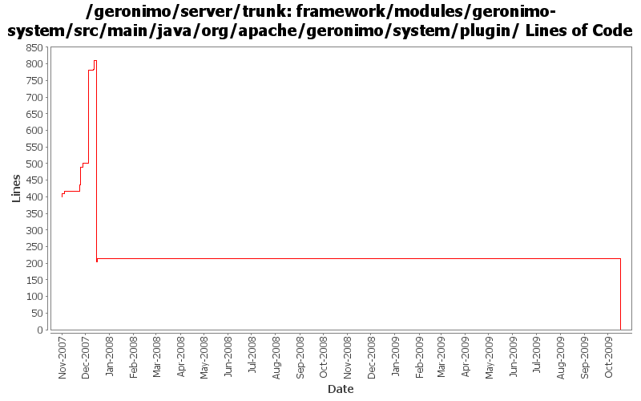

[root]/framework/modules/geronimo-system/src/main/java/org/apache/geronimo/system/plugin
 model
(2 files, 336 lines)
model
(2 files, 336 lines)

| Author | Changes | Lines of Code | Lines per Change |
|---|---|---|---|
| Totals | 62 (100.0%) | 878 (100.0%) | 14.1 |
| djencks | 54 (87.1%) | 816 (92.9%) | 15.1 |
| gawor | 4 (6.5%) | 40 (4.6%) | 10.0 |
| vamsic007 | 3 (4.8%) | 21 (2.4%) | 7.0 |
| jgenender | 1 (1.6%) | 1 (0.1%) | 1.0 |
GERONIMO-4916 step 1 remove old framwork
0 lines of code changed in 21 files:
GERONIMO-3607 Remove a lot of versions, resolve versions appropriately during export
14 lines of code changed in 2 files:
GERONIMO-3607 Large cleanup of code for extracting assemblies from running servers. Should greatly improve dealing with snapshots in local maven repos. Also changes meaning of plugin dependency start flag to override plugin load flag.
175 lines of code changed in 11 files:
verify prerequisites when installing plugins (GERONIMO-3698)
29 lines of code changed in 1 file:
bring back batch files and don't mark all files with 'execute' permissions
7 lines of code changed in 1 file:
set a messsage for file monitor
1 lines of code changed in 1 file:
minor reformat
1 lines of code changed in 1 file:
should return null so other repos are tried and/or local maven metadata file is checked
3 lines of code changed in 1 file:
Fix path stripping
1 lines of code changed in 1 file:
GERONIMO-3607 Add 'assemble a server' support to geronimo and use it from car-maven-plugin and gshell. Not yet available in the console. Better repository support would be desirable
425 lines of code changed in 9 files:
GERONIMO-3607 baby step. Make boilerplate into a plugin, and make plugin infrastructure deal with packed jar plugins (at least a bit)
68 lines of code changed in 1 file:
GERONIMO-3630 plugin installer can copy directories from plugin into server. Also some minor cleanup.
113 lines of code changed in 1 file:
GERONIMO-3611 Deployer should provide an "install-library" option to upload jars to repository
o Deployer util now supports an "install-library" option.
o Added an installLibrary method to PluginInstaller.
o Thanks to David Jencks for his suggestion.
21 lines of code changed in 3 files:
GERONIMO-3580 use jaxb for LocalAttributeManager. Also fix some bugs for ServerInstance gbean
8 lines of code changed in 3 files:
GERONIMO-3502 Allow conditions on starting plugins to be specified in geronimo-plugin.xml
2 lines of code changed in 1 file:
GERONIMO-3579 Configure which config.xml and properties files info from the plugin xml goes into
10 lines of code changed in 4 files: